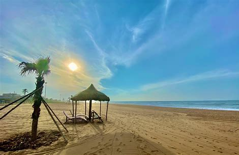
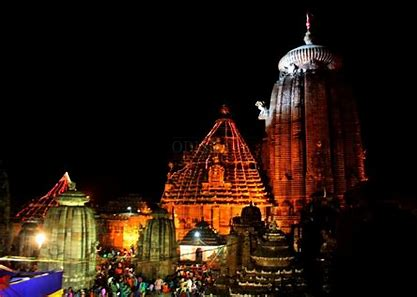
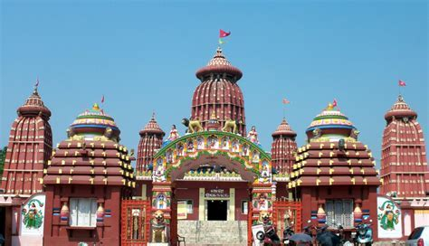
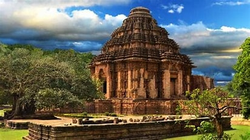
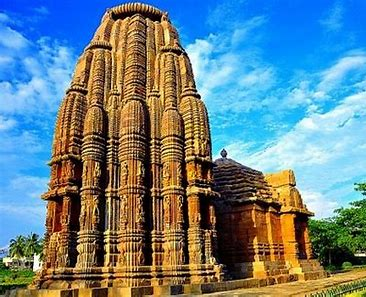

| Sl No. |
Temple Name |
Location |
Speciality |
History |
Deity Worshipped |
Picture |
| 1. |
Jagannath Temple |
Puri
(60KM) from BBSR
|
- Sacred pilgrimate site
- Longest Golden beach
|
By some divine power, the temple has no shadow |
Lord Jagannath |
 |
| 2. |
Linagaraj Temple |
Bhubaneshwar
(Old town)
|
- Sacred pilgrimate site
- The largest temple in BBSR
|
Built in the 7th century by the King Jajati Keshari. |
Lord Shiva |
 |
| 3. |
Ram Mandir |
Bhubaneshwar
|
- Sacred pilgrimate site
- one of the finest sculpted temples
|
Beautiful architecture
The spires on the temple shikharas can be spotted.
|
Shri Ram |
 |
| 4. |
Konark Temple |
Puri
(35km)
|
- Sacred pilgrimate site
- Sun temple
|
It is a 13th-century CE Sun temple by King Narasinha |
Lord Surya |
 |
| 5. |
Rajarani Temple |
Bhubaneswar
|
- Sacred pilgrimate site
- The statues are made of wonderful red and gold sandstone
|
Built in 1010 CE by Chola dynasty |
Lord Shiva |
 |